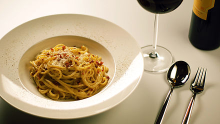
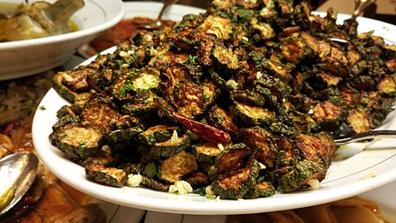

Cuisine
Rome's cuisine has evolved through centuries and periods of social, cultural, and political changes. Rome became a major gastronomical centre during the ancient Age. Ancient Roman cuisine was highly influenced by Ancient Greek culture, and after, the empire's enormous expansion exposed Romans to many new, provincial culinary habits and cooking techniques. Later, during the Renaissance, Rome became well known as a centre of high-cuisine, since some of the best chefs of the time worked for the popes. An example of this was Bartolomeo Scappi, who was a chef working for Pius IV in the Vatican kitchen, and he acquired fame in 1570 when his cookbook Opera dell'arte del cucinare was published. In the book he lists approximately 1000 recipes of the Renaissance cuisine and describes cooking techniques and tools, giving the first known picture of a fork.[144]
In the modern age, the city developed its own peculiar cuisine, based on products of the nearby Campagna, as lamb and vegetables (globe artichokes are common).[145]
In parallel, Roman Jews – present in the city since the 1st century BC – developed their own cuisine, the cucina giudaico-romanesca. Examples of Roman dishes include "Saltimbocca alla Romana" – a veal cutlet, Roman-style; topped with raw ham and sage and simmered with white wine and butter; "Carciofi alla romana" – artichokes Roman-style; outer leaves removed, stuffed with mint, garlic, breadcrumbs and braised; "Carciofi alla giudia" – artichokes fried in olive oil, typical of Roman Jewish cooking; outer leaves removed, stuffed with mint, garlic, breadcrumbs and braised; "Spaghetti alla carbonara" – spaghetti with bacon, eggs and pecorino, and "Gnocchi di semolino alla romana" – semolina dumpling, Roman-style, to name but a few.[146]